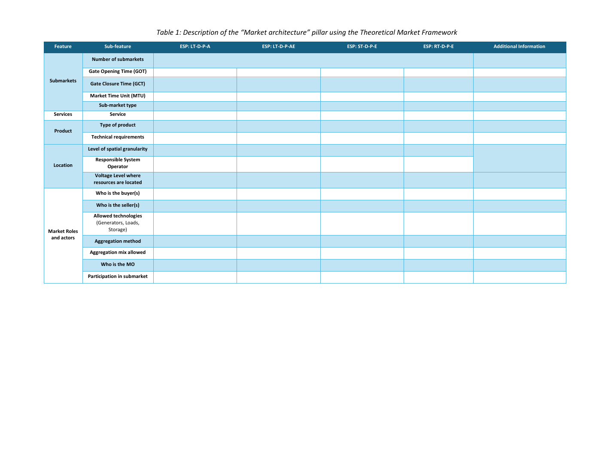
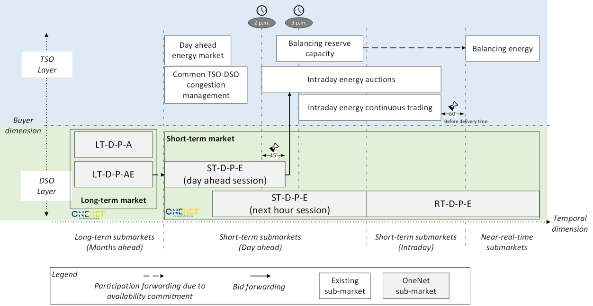
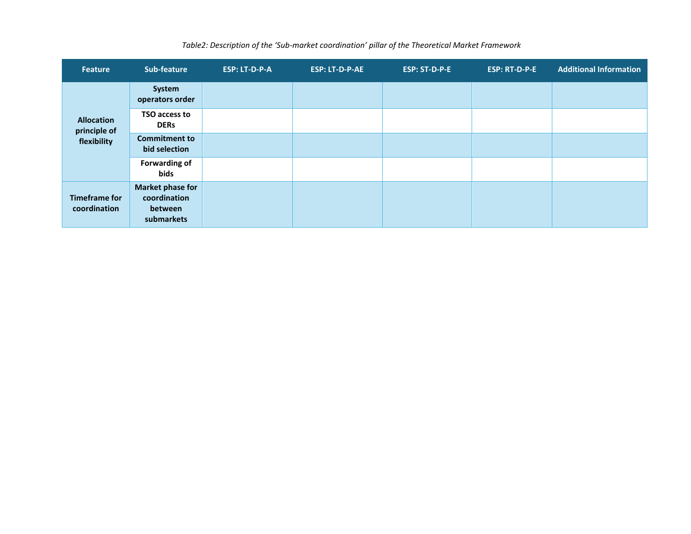
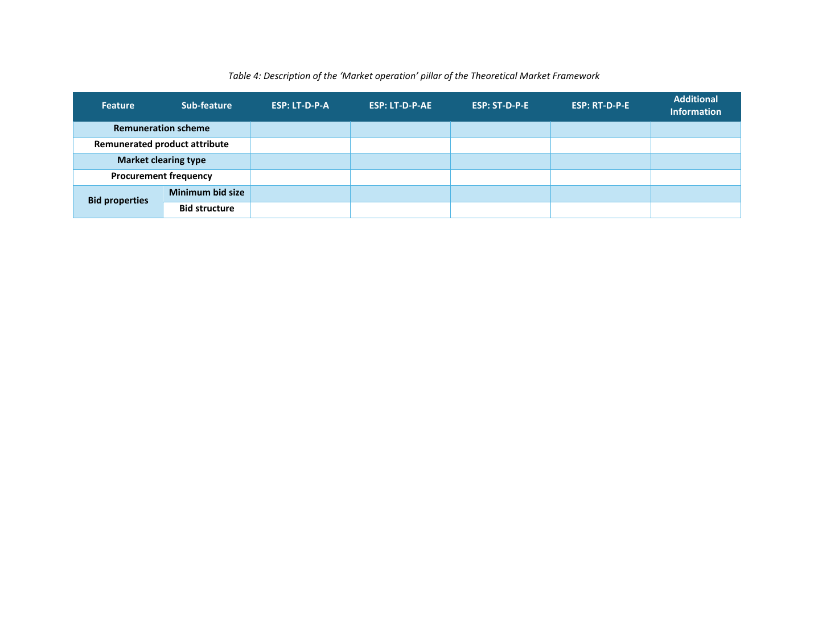

{kind=link}
Ready-to-fill TMF mapping table
Use this exact blank table to map your own market with the same feature/sub-feature structure. Complete one column per sub-market; then compare the resulting structure with other European cases.

A changing grid needs a compass for its markets.
A shared language for designing and comparing electricity-market frameworks across products, actors, timeframes, coordination layers, and network constraints. We warmly invite your expert feedback to sharpen the framework for research, regulation, and implementation.
The journey
The following path introduces the proposal as a sequence of design questions: what is being exchanged, why coordination is needed, who is affected, and where the framework becomes implementable.
A shared grammar for market design choices.
Why does it matter?Distributed flexibility creates value only when markets and networks coordinate.
Who needs a common language?Operators, regulators, market parties, active customers, and platform designers.
Where can it apply?Local flexibility, harmonised products, market phases, and dashboard interfaces.
What is the proposal?
New flexibility markets are emerging around congestion management, voltage control, balancing, local system services, and distributed resource activation. Without a common structure, each market can become an isolated vocabulary. The Electricity System Services Market proposes a compact way to describe architecture, coordination, clearing, operation, and grid representation.
Its purpose is not to force every country or demonstrator into the same design. It is to make design choices explicit, comparable, and discussable.
Why does it matter?
Distribution-connected resources can support both local and system-wide needs. The same resource may be relevant for a DSO constraint, a TSO balancing need, a local congestion product, or an intraday position.
The critical design question is therefore not only what is the product, but how interacting markets avoid conflict and create value.
Who needs a common language?
Where can it be applied?
The framework can support local flexibility markets, TSO-DSO coordination schemes, common or multi-level market models, bid forwarding arrangements, and harmonised market phases.
Worked implementation example
The Spanish demonstrator illustrates the intended workflow of the framework: experts first fill the five pillar tables using a common vocabulary; those entries are then translated into a single market-architecture view. The figure is therefore a visual synthesis of the structured tables, not a separate design exercise.

D11.2 uses the TMF to describe the Spanish demonstrator systematically. The transformation can be read as a seven-step mapping from table entries to visual elements:
| Filled TMF table input | What it determines | Visible result in the Spain figure |
|---|---|---|
| Pillar 1 — Sub-markets + GOT/GCT/MTU | How many blocks exist and where they sit in time | LT, day-ahead/next-hour, intraday and near-real-time positions |
| Pillar 1 — Service + product | Purpose and traded flexibility attribute | Congestion-management markets with availability / activation logic |
| Pillar 1 — Location + actors | Who buys and at which grid layer | Local OneNet blocks placed in the DSO layer |
| Pillar 2 — Commitment + bid forwarding | How sub-markets can interact | Dashed participation-forwarding and solid bid-forwarding arrows |
| Pillar 3 — Optimisation | Relationship among clearing problems | Separate sequential market blocks rather than one joint clearing block |
| Pillar 4 — Operation | Auction/clearing/session characteristics | Operational interpretation of each local market session |
| Pillar 5 — Network representation | How locality and grid feasibility enter procurement | Distribution procurement-area interpretation of the DSO layer |
Source basis: OneNet D11.2, Section 5.1.6 (Spanish demonstrator), Figure 5.7 and Appendix Tables 9.7–9.11; filled Spain tables supplied for this website review.
The framework
Each pillar captures a set of choices. Together, they help move from isolated local solutions toward market designs that can be compared, assessed, and improved.
Your contribution
The five pillar sections below are the review path. Please move through them one by one, leave a comment where your expertise can improve the framework, or mark a pillar as already clear when no further comment is needed.
We particularly welcome precise comments on definitions, missing design options, implementation barriers, regulatory interpretation, data requirements, and whether the framework can support real European flexibility-market design.
Scroll to the pillar most aligned with your expertise: architecture, coordination, optimization, operation, or network representation.
Use the zoomable figure and the detailed conceptual page to check the terminology and design categories.
Use the GitHub Poll for structured feedback, the Q&A discussion for qualitative comments, or mark the pillar as clear. The progress bar will move forward as you complete each pillar.
The structure of exchange
Market architecture defines what is traded, where it is traded, which actors participate, and how individual sub-markets form one coordinated design space.
Does the Entire Market Architecture pillar provide a sufficiently complete and unambiguous common language to reconstruct an existing flexibility market and to specify a new distribution-level market before coordination and clearing are designed?
Open the discussion to comment directly below. Your contribution will be stored transparently in the project’s GitHub Discussions and can be revisited by the expert community.

Use this exact blank table to map your own market with the same feature/sub-feature structure. Complete one column per sub-market; then compare the resulting structure with other European cases.

The logic of interaction
Sub-market coordination defines how flexibility is allocated when several markets, buyers, or system needs compete for the same distributed resources.
Does the Sub-market Coordination pillar capture the decisions needed to allocate the same flexibility resource pool across interacting local, TSO/DSO, wholesale or balancing sub-markets without double use, conflicting activation or avoidable barriers to value stacking?
Open the discussion to comment directly below. Your contribution will be stored transparently in the project’s GitHub Discussions and can be revisited by the expert community.
Use this exact blank table to map your own market with the same feature/sub-feature structure. Complete one column per sub-market; then compare the resulting structure with other European cases.

The clearing intelligence
Market optimization defines how bids, constraints, objectives, and sub-market interactions are transformed into a clearing result.
Do the TMF choices for optimisation methodology, the relationship among sub-market clearings and the clearing objective provide enough information to distinguish existing designs and to guide a new coordinated distribution-level market?
Open the discussion to comment directly below. Your contribution will be stored transparently in the project’s GitHub Discussions and can be revisited by the expert community.

Use this exact blank table to map your own market with the same feature/sub-feature structure. Complete one column per sub-market; then compare the resulting structure with other European cases.
The procedure of trust
Market operation defines the practical rules that make the market usable: remuneration, clearing type, procurement frequency, bid properties, and market phases.
Does the Market Operation pillar contain the minimum operational information needed to compare how flexibility sub-markets actually run and to implement a new one without confusing operational rules with other TMF dimensions?
Open the discussion to comment directly below. Your contribution will be stored transparently in the project’s GitHub Discussions and can be revisited by the expert community.
Use this exact blank table to map your own market with the same feature/sub-feature structure. Complete one column per sub-market; then compare the resulting structure with other European cases.

The physics inside the market
Network representation defines how physical constraints, topology, voltage, congestion, and location are included in the market design.
Does the Network Representation pillar adequately capture how and when distribution/transmission constraints are introduced so that a market result can be physically feasible while remaining implementable in terms of data, computation and information sharing?
Open the discussion to comment directly below. Your contribution will be stored transparently in the project’s GitHub Discussions and can be revisited by the expert community.
Use this exact blank table to map your own market with the same feature/sub-feature structure. Complete one column per sub-market; then compare the resulting structure with other European cases.
Final feedback
After the pillar-by-pillar review, we warmly invite you to share any general comment, concern, reference, use case, implementation example, or supporting material that could help us improve the proposed framework as a whole.
Use this link for cross-pillar comments, conceptual concerns, regulatory reflections, or suggestions for improving the overall framework.
Share general feedbackUse this link to provide reports, diagrams, examples, references, implementation notes, or any material you are willing to share with us.
Upload materialReference library
These documents provide the scientific and project basis for the framework, market-design mapping, harmonisation logic, coordination mechanisms, and grid-segmentation approach.
Fast signal
A short poll can capture where reviewers see the highest value, highest uncertainty, and most urgent design issue.
Open pollSupporting evidence
A static GitHub Pages site cannot store uploaded files by itself. Link this button to a Google Form with file upload, OneDrive/SharePoint request folder, or GitHub issue template.
Upload supporting materialConfiguration
Each TMF pillar supports two GitHub channels: a native GitHub Poll for structured feedback and a Giscus-embedded Q&A discussion for qualitative expert comments. Configure the five poll URLs and five Q&A terms in content/feedback.yml or Pages CMS.